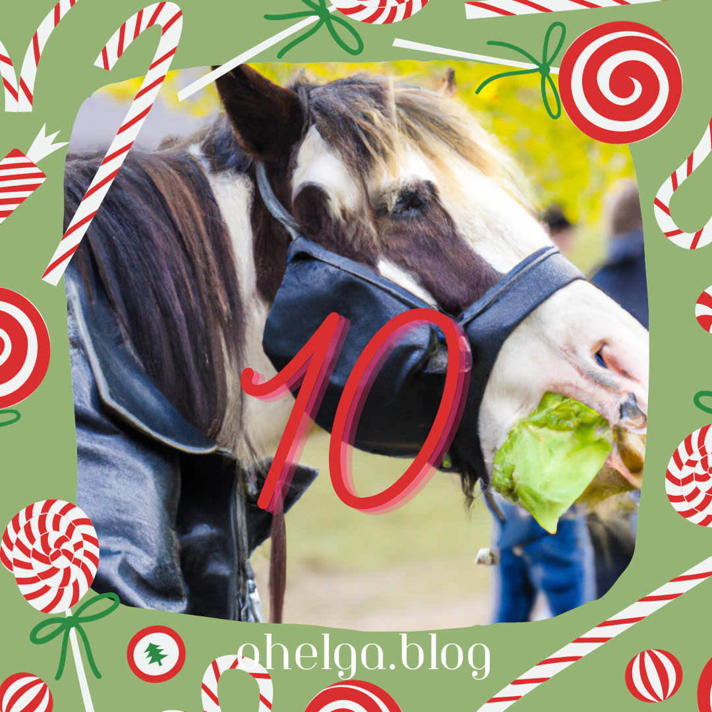

Tuleva “ehtooton” suosikki? Gårdagens häst travar in i dagens lucka och serveras nattvard. Laulajalla on kaunis ääni ja esittää kauden ensimmäisen rock-konserttiversion. Päivän Luukussa: Ilta ja Oi jouluyö.

Tuleva “ehtooton” suosikki? Gårdagens häst travar in i dagens lucka och serveras nattvard. Laulajalla on kaunis ääni ja esittää kauden ensimmäisen rock-konserttiversion. Päivän Luukussa: Ilta ja Oi jouluyö.
Kommentit / Kommentarer (2)
<p>Hon uppträdde på slottsbalen, rev av två riktigt bra ballader. Jag hade nog hört namnet men måste googla henne, hon har tydligen deltagit i UMK också. Möjligen betygsätter jag nu hennes insats på balen, men jag tyckte hon gjorde det ganska bra: 8.</p>
<p>I love the idea of a silent favorite.</p>